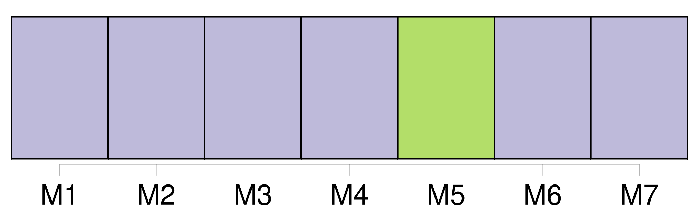
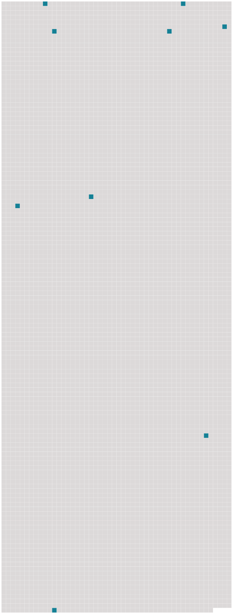

Longueur nb maillons : 9 mentions |
 |
Elle habitait avec ses parents la belle propriété de [St-Jean] , qui domine la jonction de l'Arve avec le Rhône, en aval de Genève.
M. L. Perey a raconté déjà comment les Pictet de [St-Jean] voisinaient familièrement avec l'illustre philosophe, et les papiers de Rosalie et de sa famille, ont fourni à l'aimable biographe beaucoup de détails sur ce qui se passait aux Délices, et à Ferney. [9 phrases]
C'est à [St-Jean] que vécut le jeune ménage pendant cinq années ; c'est à [St-Jean] que naquit Rosalie, puis une seconde fille et un premier fils qui reçurent les noms de Louise et de Juste, c'est [là] que Charlotte aima, pleura, sourit et souffrit. [77 phrases] Rosalie et ses frères et sœur habitaient tantôt Genève avec leur père, tantôt [St-Jean] avec M. et Mme Pictet. [5 phrases]
) [104 phrases] Dès les premières heures, le second mariage de Samuel amena aux foyers de [St-Jean] et de Genève plus d'amertume que de consolations. [75 phrases] Parties de [St-Jean] le 3 décembre 1772, en compagnie de leur grand'mère et de trois autres dames de Genève, nos voyageuses atteignirent Paris le 9 au soir et eurent grand'peine à s'y loger. |
 |
Il est possible de télécharger la ressource sur la page Ortolang |
Si vous avez des questions ou vous voyez des erreurs, merci d'envoyer un mail à silvia.federzoni89@gmail.com |